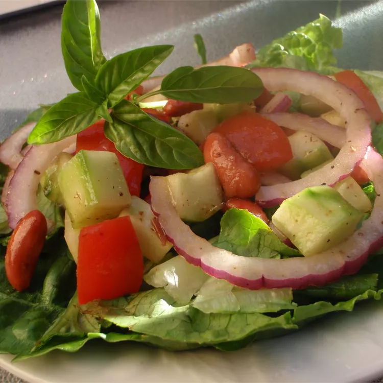

Cucumber Tomato Salad

Description
A refreshing, light tomato, cucumber, and kidney bean salad for any hot, humid summer day! The beans and tofu make it a great main dish for vegetarians, as well. The basil may be substituted with fresh parsley or mint. Be sure to make this salad just before serving.
Ingridients
-
1 tomato chopped
-
1 cucumber, seeded and chopped
-
¼ cup thinly sliced red onion
-
¼ cup canned kidney beans, drained
-
¼ cup diced firm tofu
-
2 tablespoons chopped fresh basil
-
¼ cup balsamic vinaigrette salad dressing
-
salt and pepper to taste
Steps
-
Combine tomato, cucumber, red onion, kidney beans, tofu, and basil in a large bowl.
-
Toss with balsamic vinaigrette salad dressing and season with salt and pepper just before serving.